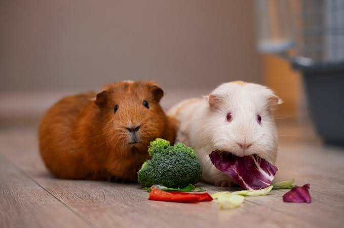
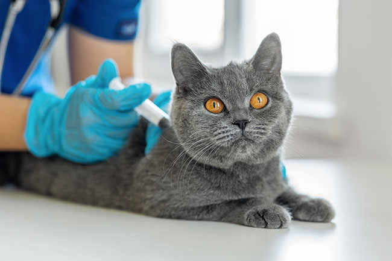

Cuidados esenciales para tu mascota
Conoce algunos consejos importantes para mantener a tu mascota saludable, feliz y con una buena calidad de vida.
Leer másConsejos, información y datos interesantes para el cuidado de nuestras mascotas.

Conoce algunos consejos importantes para mantener a tu mascota saludable, feliz y con una buena calidad de vida.
Leer más
Descubre por qué mantener las vacunas de tu mascota al día es fundamental para prevenir enfermedades y proteger su salud.
Leer más